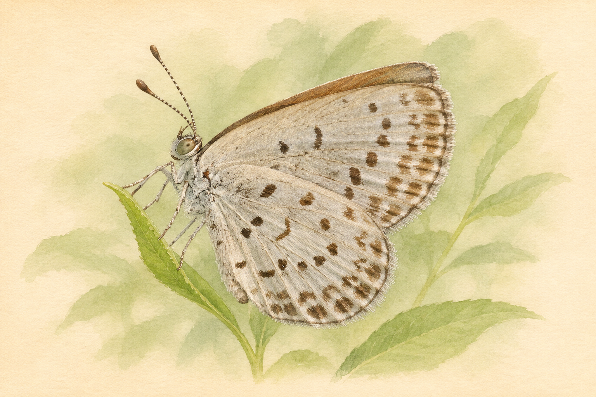

SPECIES RECORD / Z002-042
ヤマトシジミ
Zizeeria maha
小型で、翅裏の灰色地に黒点が並ぶ。市街地の地表近くを飛ぶ。
- 科
- Lycaenidae
- 表示グループ
- シジミチョウ科
- 確認日
- 2026-11-10

オスとメスの違い
雄は青色部が広く、雌は外縁の暗色部が広い。
大きさ
前翅長 9-16mm（補助図鑑の一般値。沖縄個体だけの測定値ではない）。
沖縄県内の島・記録
記録のある島の例：沖縄本島、石垣島、西表島、与那国島、宮古島、竹富島、小浜島、波照間島。記録は現在の定着を保証しない。
好む場所
カタバミの生える道端、庭、畑、草地。
その他の詳細・記録の注意点
記録島・食草は地域図鑑に基づく要約。産卵のみの記録、飼育情報、海外の一般情報は、県内での野外繁殖とは区別する。 地域資料では旧属名 Pseudozizeeria maha を用いる。
幼虫・食草
カタバミ、ムラサキカタバミなど。


出典・関連WEBサイト
- 沖縄蝶類生態図鑑：ヤマトシジミ (2026-11-10)
- 昆虫エクスプローラ：ヤマトシジミ (2026-11-10)
- 日本の蝶（杉坂美典）：雌雄比較 (2026-11-10)
データを使う
調べた情報はSQLite・CSV・テキストで保存。出典と画像の利用条件も一緒にたどれます。CSVはExcelで開きやすいUTF-8 BOM付きです。